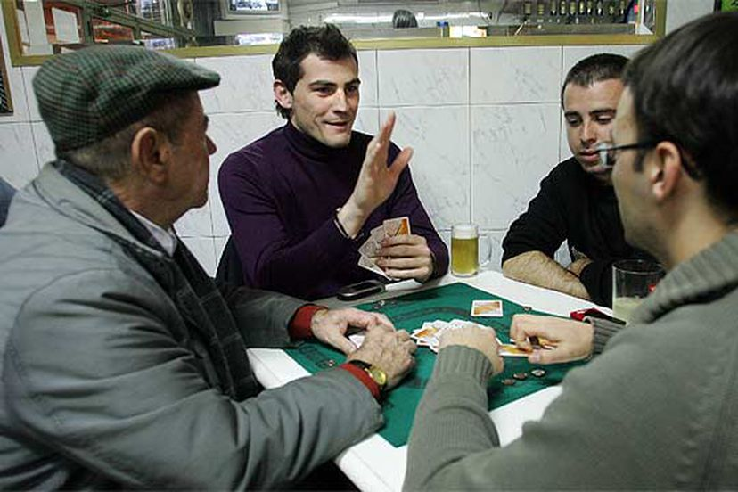
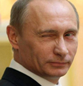
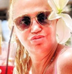

Los objetivos de la Asociación del Mus de Palencia (AMP) son llevar el noble juego del mus a todos los rincones de la provincia, organizar campeonatos cada domingo en el bar del Teleclub de Torre de los Molinos, velar por la pureza de esta afición, defender su candidatura a deporte olímpico y favorecer el ocio sano de sus asociados. Además, exigimos jugar con ocho reyes y ocho ases y la real es 31 con tres sietes y cualquier figura.
Una asociación con casi 100 años de historia conlleva unos gastos que son sufragados por sus socios. La última asamblea acordó por unanimidad las siguientes tarifas:

|
Charla de Pedro Pérez
Campeón de Mus de Valcabadillo
13 de junio a las 20.30 horas
Charla de María Gómez-Pérez
Catedrática de Ciencias Musísticas
19 de julio a las 20.30 horas
Master Class: jugar al mus
John Cameron, doctor de Oxford
3 de agosto a las 20.30 horas